WARNING: Start This “Anti-Shed Morning Ritual” Today and Rescue Your Hair in Just 2 Weeks
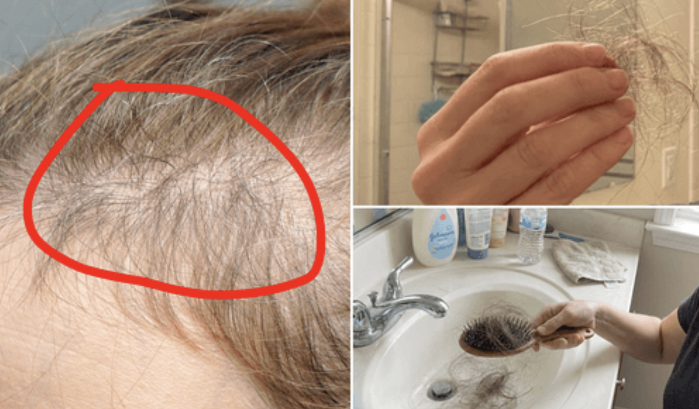
My name is Dr. Sarah Whitfield. I'm a dermatologist.
22 years in practice. More than 12,000 patients. And I spent an entire decade with a closed schedule and a 4-month waiting list.
I'm not telling you this to show off. I'm telling you because none of that experience prepared me for my worst case.
Female hair loss was my specialty. It was the reason women drove across the state to see me. I had a protocol. It worked. I watched women walk out of my office with their hair back, week after week, year after year.
And then the hardest case of my entire career arrived with my own last name on it.
My little sister, Diane.
Three years past menopause, and her hair — the thing she had always loved most about herself — started coming out in tufts on the comb the moment she got ready for work in the morning.
When she showered, the drain was clogged with tufts too.
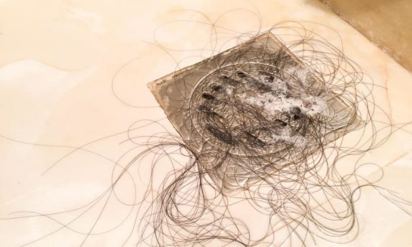
When she swept the house, she started noticing the floor was dirtier with her own strands scattered in every corner.
And I did what any doctor does when she trusts what she knows.
I treated her.
With the same confidence I had with any patient. With the same protocol that had worked thousands of times. I looked my little sister in the eye and said:
I'll fix this. Trust me.
And I failed.
Not once. Over and over. FOR 3 YEARS.
I need to confess that, because it's the entire reason I'm writing this. The woman other women were referred to when nobody else could solve it couldn't do a thing for the person who shared a bedroom with her their whole childhood.
And that's not even the worst part.
The worst part is that the answer was inside my own office the entire time.
3 Years. $20,000. And Then I Caused the Worst Night of My Sister's Life.
But before I tell you what I found, you need to understand what Diane had already tried.
We both tried everything.
Not “everything” in the drugstore-shelf sense.
Everything in the sense of everything medicine has.
Topical minoxidil, at both concentrations. Hormone replacement. High-dose biotin, ferritin, and vitamin D. Ketoconazole shampoos. Absurdly expensive serums.
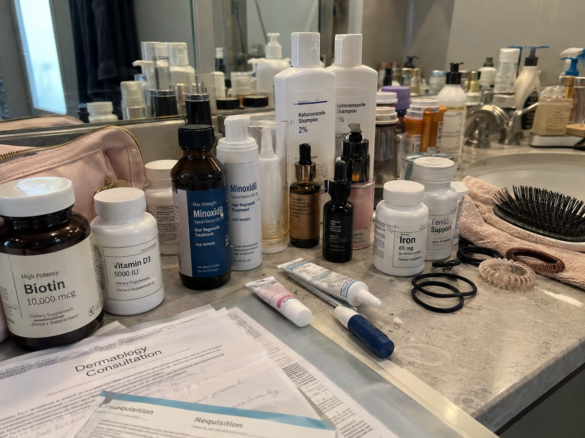
A dermatologist in another state, for a second opinion that wasn't mine…
And a dozen other attempts I couldn't even list here.
3 years. More than $20.000. And I documented every step the way I'd document it for any patient.
We counted. Every single day, for months, Diane collected every strand that fell — pillow, drain, comb, brush — and wrote it down. I built the spreadsheet. I made the graph.
And that line would not move.
It didn't matter what we added. It didn't matter what we swapped out. Tuesday morning's number was the same as Tuesday morning's number three months earlier.
This is what I need you to understand, because it's probably your situation too: she wasn't failing for lack of effort.
She was the most disciplined patient I have ever had in my life. She did everything right, at the right dose, for the right length of time, under medical supervision.
And nothing worked.
That's when I started to suspect something uncomfortable: maybe the problem wasn't the intensity of the treatment. Maybe it was the fact that nothing we were using ever got anywhere near where the problem actually was.
But I still had no proof. All I had was a stubborn spreadsheet.
The proof came on a Friday night. And it came in the worst way possible.
Diane's marriage of more than 30 years had ended the year before. And I'm the one who nagged her into accepting a date with a man who had been asking her out for 2 months.
I argued. I insisted it was time for her to move forward and let herself have a new relationship.
So after a lot of pushing, she finally said yes.
That evening, in front of the mirror, she did what she always did: flipped her hair to one side, then the other, trying to throw a little volume over the bare avenue running straight down the middle of her part.
When she got there, she chose the dim corner table on purpose. She told him she liked it because it felt more intimate.
The truth is she didn't want him to see her scalp.
And it was going well. The wine. The laughing. For the first time in years, she felt like herself.
Then he leaned over, slid his arm around her shoulder, and gently ran his fingers through her hair.
When he pulled his hand back, there was a tuft of her hair in it.
Neither of them said a word. They didn't have to.
She called me from the car. I could barely understand what she was saying.
The guilt was crushing. I was the one who had pushed her into that date. For 3 years she had trusted me with her hair, and I had been walking in circles.
That was the moment I stopped repeating what I'd been doing for 2 decades of practice.
That spreadsheet wasn't telling me my sister had a difficult case.
It was telling me that all of medicine — mine included — was treating the wrong thing.
And I needed to find out what was really going on.
At 1 A.M., Alone In My Office, I Read One Line That Made 22 Years of My Training Worthless
I spent hours studying and digging. The kind of papers and documents that never make it to a magazine, or to a doctor's office.
Then one night, coffee cold, phone face-down, I finally found it.
For almost your entire life, the hormone that protected your hair and kept it thick, full and anchored was estrogen.
And around age 45, the levels of that hormone in your body begin to drop sharply.
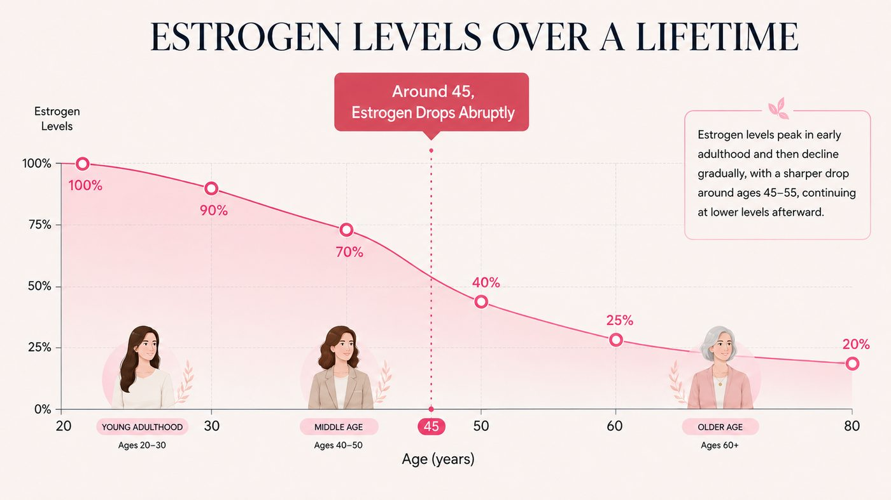
And when estrogen starts to collapse, a far more aggressive hormone takes over. It's called DHT.
“The Hair-Killing Hormone”.
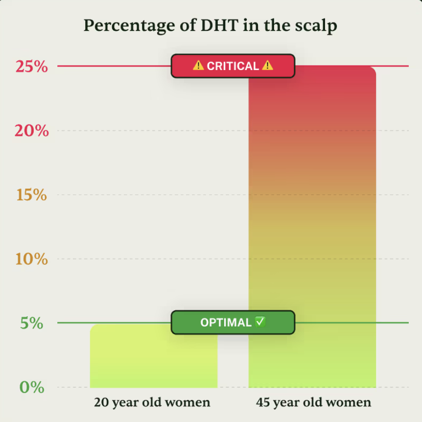
Think of DHT like crabgrass in a garden.
It wraps around the root of every hair, deep under your scalp, and strangles it. It cuts off the blood flow and the nutrients.
Strand by strand, it destroys your hair from the bottom up.
The strand gets thinner. Then weaker. Then it dies and falls — and nothing grows back to replace it.
That's Hair Collapse.
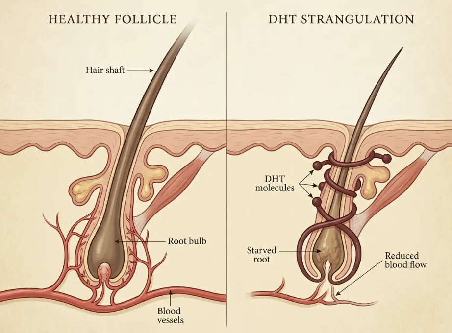
Your hair isn't "thinning with age." It's being suffocated and destroyed from below, where you can't see it.
But here's the part almost no woman ever hears:
The root is not dead. Not yet.
It's being strangled. And the moment you free that root from DHT, it can come back to life — and grow hair again.
It doesn't matter if you:
- Take biotin every day
- Switch shampoos every month
- Spend hundreds on salon treatments
As long as DHT has the root in its grip — your hair will not grow back.
But that wasn't the line I read 5 times.
This was the line:
DHT is acting approximately 4 millimeters below the surface of your scalp.
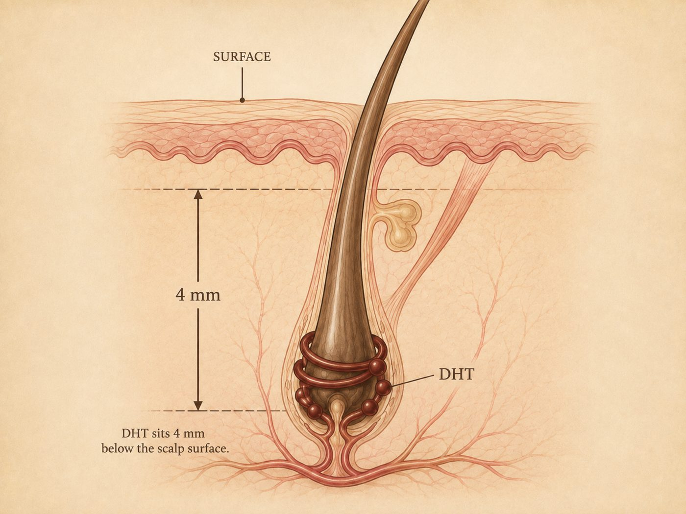
I sat there with my heart pounding, because I knew exactly what that meant.
4 millimeters is below everything.
Below shampoo. Below oil. Below every serum I had ever prescribed in my entire career.
And what I read next explained not just why Diane's treatment was failing — but exactly what could reach it.
Your Hair Isn't “Thinning With Age.” It's Being Suffocated From Below, Where You Can't See It.
But here's the part almost no woman ever hears:
The root is not dead. Not yet.
It's being strangled. And the moment you tear the DHT off it, that root can come back to life and grow hair again.
That's why nothing you bought ever worked. Not because your hair was too far gone. Because none of it ever got anywhere near the thing causing the damage.
Biotin pills are flushed out of your body within hours, long before they reach the root.
Shampoos go down the drain in 60 seconds, and were never made to go deep enough.
Scalp oils sit on top of the skin. The damage is four millimeters below it.
You were feeding a root that was being suffocated.
And there's a second thief.
Because while DHT strangles the root, the scalp around it is quietly collapsing too. Thinner. Drier. Less collagen. Less circulation. Inflamed.
Which means that even when a new strand does manage to come through, it grows out of ground that can't support it — and it breaks before anyone can see it.
So hear me clearly.
It's not age. It's not bad genes. It's not something you did.
Your roots are strangled, and the ground they grow out of has dried up.
But the good news is that both of those can be reversed.
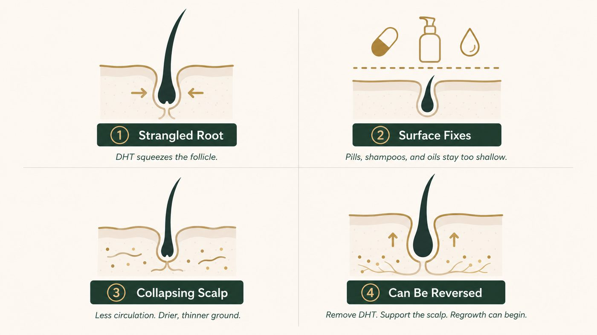
Before You Read Another Word, See How Many of These Sound Like You
But before I tell you how it can be reversed, you first need to know whether you're going through Hair Collapse too.
Because of all the women who eliminated this problem for good, some were 47 and entering menopause.
Others were 71 and had been losing hair for a decade. Some had already tried minoxidil and Rogaine. Others had already tried everything on the drugstore shelf.
But they all described the same set of signs.
If four or more sound familiar, you are almost certainly dealing with the same problem.
That was Diane's list
HAIR COLLAPSE INDEX
That was Diane's list. She checked 8.
And once I understood the real cause, I found there are only four ways anyone has ever tried to fix it.
There Are Only Four Ways. Three of Them Will Let You Down.
Let me save you the years I watched my sister lose.
Biotin. Collagen. "Hair, skin and nails."
You already know how this ends. Biotin is water-soluble — your body flushes what it doesn't use within hours. It never reaches the root, and even if it did, it was never capable of removing DHT. You can't feed a root that's being strangled.
Sixty seconds of contact, then down the drain. Oils sit on top of the skin.
The damage is four millimeters below the surface. Nothing in this category was designed to get there — and nothing in this category claims to.
They can force a response only while you're using them. Which means that for most women, the shedding comes roaring back the moment it runs out.
You keep the hair while you're renting it. Stop paying, and your scalp and your strands go right back to the same situation — or worse.
That's without mentioning the shedding phase, and the fact that it was never aimed at getting DHT off the root either.
Here is the ingredient all those videos were built on.
The Copper Peptide.

Copper Peptide.
The thing I had been working with for decades inside my own office. For wrinkles. For elasticity. For collagen. The ingredient that worked miracles on faces.
It never occurred to me to put it on a scalp. It's a skin ingredient. Everyone knows that.
Except the scalp is skin. And copper peptide is famous for exactly one thing — it gets in where nothing else does.
That's why it works so well on the face. And it's exactly why it can reach something four millimeters below the scalp.
But copper peptide alone isn't enough. This is a three-stage job. It needs two other things that make the result hold.
And this is where I have to stop you.
Because maybe you've already tried a copper peptide serum on your scalp and felt nothing.
Of course you didn't.
You used a product designed for a cheek on a scalp.
One ingredient, in the wrong vehicle, at a face concentration, cannot free the root, rebuild the ground, and feed the new hair.
But all three together, in the right forms, in the right order?
That was the combination that changed everything for Diane.
Free the Root. Rebuild the Ground. Feed the New Hair.
The ritual has four ingredients doing three jobs.
Miss one, and the whole thing fails. That is exactly why a copper peptide face serum, on its own, is not the answer.
This is the main one, and it's the center of all of this.
It's small. Absurdly small — a fragment of three amino acids bound to copper. That smallness is the entire point of it, and the reason my industry has been obsessed with it for decades.
It crosses the surface and reaches the root, four millimeters down, where DHT is doing the damage — and it tears the DHT off.
Circulation returns. Nutrients return. The root that was suffocating can breathe again.
Think of it like pulling the crabgrass out by hand.
Tearing off the DHT wakes the root — but if the scalp above it is thin, inflamed, dry and starved, whatever grows out of it will break before you ever see it.
Niacinamide (B3) brings the scalp itself back to life. It rebuilds a thicker, stronger, better-supplied bed, so the new strand has firm ground to grow out of.
Panthenol (B5) shuts off the itching and the flaking. It ends the dryness that snaps a new strand before it has a chance to grow long enough to count.
In plain English: step 1 pulls the evil out by the root, step 2 makes the soil fertile enough for the strand to grow.
Most women swallow biotin and lose all of it within four hours.
Delivered straight onto the scalp — alongside a peptide that has already opened the door — it finally reaches the root and helps build the new strand from the inside out.
So beyond the strand being freed to grow, it grows back healthy and strong.
Free. Rebuild. Feed.
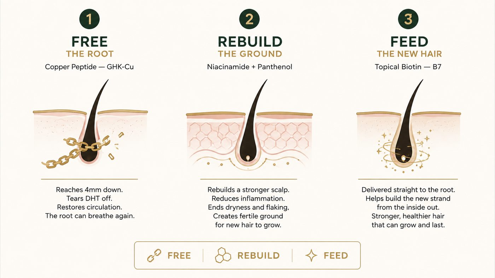
That's the entire ritual. Not one ingredient. Four, in the right forms, in the right amounts, doing three jobs in sequence.
But knowing which ingredients they were was the easy part.
Making them actually work on a human scalp nearly broke me.
Why Almost Every Copper Peptide Bottle On the Internet Will Never Reach Your Root
Maybe you're already reaching for your phone thinking exactly what I thought.
“Great — I'll buy a copper peptide serum and put it on my scalp.”
I tried that first. With a compounded, more potent formula I had spent years developing myself.
8 weeks with Diane. Almost no result. And here's why:
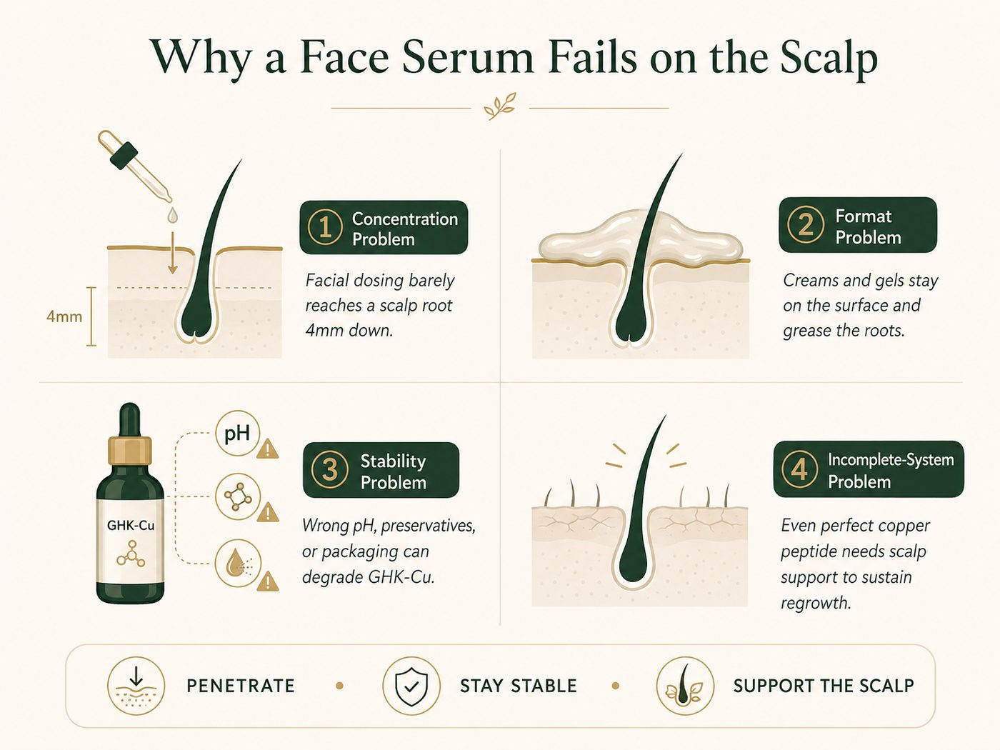
So I went back to the bench and started over, with a scalp as the target instead of a face.
I changed one variable at a time. Concentration. pH. Format. I wrote down absorption, tolerance, itch, residue, and what repeated.
I threw out far more than I kept.
Most weeks, nothing happened.
Then Diane called me on a Tuesday and said something she hadn't said in 3 years:
“Sarah… there was almost nothing on the pillow today.”
I remade the same batch to be sure. And again.
The response repeated.
That was the formula. Not "copper peptide." An exact mist, in an exact form, in a repeatable ratio, with three ingredients behind it holding the result in place.
That's what I finally handed my sister.
The First Change Came in 6 Days. The One That Made Her Cry Came in 6 Weeks.
Two sprays to the scalp, morning and night. Ten seconds.
- Days 1–3Nothing you can see. This is the part where most women quit. Underneath, the copper peptide is already reaching the root and starting to pull DHT off it. Above, your comb still looks the same. Keep going.
- Week 1The falling slows. The daily wreckage on the comb starts to ease. Not gone. Less. That's the first sign the strangling is loosening.
- Week 2Less on the brush. Far fewer strands on the pillow and in the drain. Diane's exact words: "my pillow stopped looking like a crime scene."
- Week 4Stronger hair. The shedding stops. The hair feels different in your hands — firmer at the root, less like it's about to let go. This is usually the week a woman starts to believe it.
- Week 6New strands appear. Baby hairs along the part line. At the temples. Short, fine, standing straight up, refusing to lie flat. Those are the roots DHT had strangled, fighting their way back.
- Week 8Real density. A fuller ponytail. Visible coverage where the scalp used to show. Her hairdresser noticed before she said a word.
- Months 3–4The part line closes. This is the one nobody prepares you for. The bare avenue down the middle stops being the first thing you look for in the mirror. The new hair grows long enough to blend instead of standing up. Volume stops being a trick you perform with a brush.
Four months later, Diane wore her hair down, parted in the middle, in broad daylight, to a family lunch.
But the part that still gets me isn't the photo.
It's that she called him back. Yes — the same man from the date.
The same restaurant. But this time she didn't ask for the corner table.
And today the two of them are dating. Yes, my sister's life changed completely in just 4 months.
The Hair Came Back First. Then the Woman Came Back.
Diane expected her hair to change.
She didn't expect the rest of it to change with it.
She started wearing her hair down again. No scarf. No strategic clip. No part forced over to the side. No cover-up powder. Down, in front of people, the way she wore it at 20.
She stopped flinching when someone touched her head. This is the thing nobody tells you about hair loss. You start pulling away from touch. From your husband, your child, your hairdresser. For three years, Diane's whole body went rigid whenever a hand came near her hair. That's over.
The morning dread went away. She looked at the pillow first thing, the way she had for three years — and there was almost nothing there. She told me that alone was worth it.
She stopped feeling ten years older than she is. Nothing ages a woman faster, in her own eyes, than seeing her scalp show through in the mirror. And nothing gives those years back faster than watching it close.
Her scalp went quiet. No itching. No flakes on a dark shirt. No scratching at the crown at night.
Her skin looked different. That one surprised me less than it surprised her — copper peptide is known for switching collagen and elastin back on, and it doesn't ask whether it's on a forehead or a hairline.
And the strangest part?
Her hair stopped being the loudest voice inside her own head.
That's what women mean when they say they feel like themselves again.
1 Bottle. 4 Ingredients. 10 Seconds a Day.
I couldn't keep making batches at my own bench for every woman who emailed me after Diane started talking about her results on her Instagram.
So I did it properly.
I took the formula to an FDA-registered, GMP-certified American lab — one of the few in the United States capable of producing a stable copper peptide at this concentration.
Copper Peptide to free the root — by tearing the DHT off it.
Niacinamide and Panthenol to rebuild the ground it grows out of.
Topical Biotin to feed the new hair from within.
In controlled forms. In a consistent ratio. In the one format the ritual was built for: a fine mist that goes down instead of sitting on top.
Two sprays, morning and night. 10 seconds. That's the entire ritual.
I call it Crowned®.

Let me be clear about what it is not.
It's not a drug. It's not minoxidil. It's not a shampoo. It's not a pill your body flushes out before lunch.
And it's not a face serum with the word "scalp" printed on the label.
It's the complete four-ingredient ritual, dosed for the one place where the damage is actually happening.
And I made it for women like my sister.
You Don't Even Realize How Many Times a Day This Hurts
This is the part that's hard to explain to anyone who hasn't lived it.
Hair loss doesn't hurt you once. It hurts you 5 times a day, every day, in five moments you already know by heart.
And you've learned to walk through every one of them pretending it doesn't hurt.
The pillow.
You open your eyes and look at the pillow. Before your face. Before anything. You already know what you're going to find and you look anyway, every single day, the way you'd inspect damage.
The shower.
This one is the worst. You wash your hair with your eyes closed, because with your eyes open you'll see what's left in your hand. Then you look at the drain. And it doesn't look like hair loss, it looks like something that happened to you.
You gather it with your fingers, throw it away fast, and don't tell anyone.
The bathroom mirror.
Overhead light. The worst light there is for you. You tilt your head, find the part, and measure — no ruler, no number, but you measure. Is it the same as yesterday? Is it worse? You can't not do it.
The brush.
You brush and you're already cleaning the brush as you go, in a motion so automatic you don't even notice you're doing it anymore. One stroke, clean. Another stroke, clean.
Leaving the house.
20 minutes. Not to look good — to hide. Scarf, clip, powder, part on the other side, that turn in the mirror to check the crown from behind.
One single day without those moments already changes your mood.
Eight weeks without them changes the woman you see in the mirror.
And that is exactly what Crowned gives you back — you.
Real Women. Real Results.


4 Signs This Was Built For a Woman Exactly Like You
Let me be direct about who this was built for.
If you've taken the supplements exactly as directed for a year. If you've followed the routine, bought the serum, gone to the appointments, and shown up for a treatment plan that never gave you back what it promised — you are the exact person I made this for. Not because you didn't try hard enough. Because none of it was ever aimed at the right place.
Perimenopause. Menopause. The moment where the same hair you'd had your whole life started behaving like someone else's. If you can point to roughly when it started and it lines up with your hormones shifting, that's not a coincidence — that's the mechanism in this article.
If you're on minoxidil and the thought of stopping scares you, you already understand the problem. You don't want something that holds your hair hostage. You want the thing that's strangling the root gone.
Two sprays, morning and night. No pills to remember. No diet. No appointments. If your last three attempts died because the routine was too complicated to sustain, this one was designed to survive a real life.
I'd rather turn you away than take your money.
It's not for someone who wants a result next week. Hair grows on a cycle. If you're not willing to give this the eight to sixteen weeks a follicle cycle actually takes, don't order — you'll quit right before the part where it shows.
It's not for someone whose hair loss has an unrelated cause. Thyroid disease, autoimmune conditions, severe deficiency, medication side effects. If you've never had labs run, get them run. I'd tell you that as your doctor, and I'm telling you that here.
And it's not for someone looking for the cheapest bottle. If price is the deciding factor, buy the $12 biotin. It won't work either — but it'll cost you less to find out.
The True Cost of Not Addressing This Issue
Let's talk honestly about money.
Not just the price of Crowned. The price of continuing exactly as you are.
PRP injections run several hundred dollars a session, and they want you to do a series.
A transplant costs five figures, and it doesn't stop DHT — it just moves hair to a place DHT hasn't reached yet.
Minoxidil is cheap per bottle and expensive forever, because the day you stop is the day it all starts over.
But the quiet expense is the graveyard inside your bathroom cabinet.
- Biotin$40
- A thickening shampoo — then another one$32
- A serum you believed worked$68
- The treatment that lasted three washes$200
- A topper you've worn twice$180
- Scarves, clips, powders, sprays, and a hat you don't even like—
For most women, it isn't one expensive mistake.
It's $40 here, $60 there, over and over, for years.
And then there's the cost nobody puts on a receipt.

The one line item that actually changes what happens next.
Twenty minutes every single morning. Not to look beautiful — to hide. Do the math on that one. Twenty minutes a day is over 120 hours a year. Five full days of your life, every year, spent arranging something to cover something else.
Three years of never washing your hair with your eyes open.
Every time a hand came near your head and your whole body went rigid — your husband, your child, your hairdresser — and you played it off, and they never knew why.
Every time you looked in the mirror and saw a woman 10 years older than you are.
And the worst line item of all: another year of waiting to see if it stops on its own.
It doesn't stop on its own. That's the entire point of everything you just read. Every morning you wait, DHT is destroying roots that were still alive this month and won't be next year.
Doing nothing isn't free.
It's the most expensive thing you've been buying — and you've been paying for it every single morning, in front of the mirror, without ever taking out your credit card.
The Real Reason Women Quit
I need to be honest with you before you see the offer.
When Diane called me to say the shower drain was almost clean, that was real. It was early, and it was real.
But the woman who wore her hair down with confidence, feeling like a new person — that was month four.
Not because the ritual is slow.
Because hair grows on a cycle, and your follicles have been running the same instruction for years. A response that's been repeating that long doesn't change because you sprayed something for nine days.
Here's what actually happens across the three steps.
The copper peptide moves first. Tearing DHT off the root is the fastest part of this, and it's why the shedding can start easing in the first two weeks. That's what you notice early.
Then the ground rebuilds. Niacinamide and panthenol are working on the scalp itself — thickness, calm, hydration. You feel this before you see it: the itching stops, the tightness stops, the flaking stops. This is what decides whether the new strand survives long enough to be visible.
Then the hair simply has to grow. And this is the part women misjudge, so let me be exact about it. A freed root doesn't produce a visible strand overnight. It has to push one out, and then that strand has to get long enough to actually cover something. Hair grows about half an inch a month. That's not a flaw in the formula — it's biology, and no product on earth changes it.
Which is why "my shedding stopped" happens in weeks, and "my part line closed" happens in months.
Free. Rebuild. Feed.
The first signs come quickly. But it's consistency that brings your hair — and you — back to what it was.
That's exactly why the small percentage of women who used Crowned for six weeks felt it wasn't enough. And why the ones who stopped at week 3 walked away believing their hair was the problem.
They didn't fail. They left too early.
So when women ask me how much Crowned to order, I stopped being polite about it.
Order enough to finish the cycle you start.
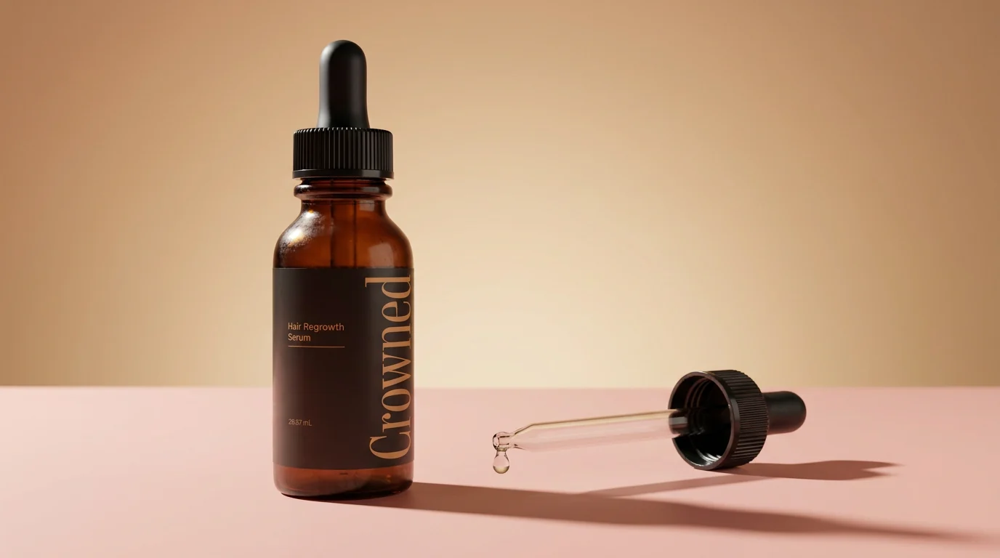
I Made the Decision My Team Hated…
Here's the situation, honestly.
Only a handful of labs in the United States can produce a stable copper peptide at this concentration, and mine is one of them.
Crowned is currently the only American brand offering the complete formula in a mist dosed for the scalp.
You won't find it in a pharmacy. If a major retailer got their hands on this, the price would be 6x higher, and I won't do that to women — because my purpose was never to make money off this formula.
You also won't find it on Amazon or eBay. Too many counterfeits, too many knockoffs, too many blue bottles with dye inside instead of peptide — and I won't risk that with something you put on your scalp twice a day.
Every batch is purity-tested in an FDA-registered, GMP-certified facility. It's the only way I can guarantee that what reaches your scalp is real.
That level of quality makes production slow and expensive. When we launched, a bottle was $99, and women paid it happily because it worked.
And that's exactly when the problem started.
I know what happens when a woman finally finds something her hair responds to.
She buys one bottle.
The shedding slows. The shower drain gets cleaner. She starts to believe it.
Then the bottle starts running low. So she sprays once a day instead of twice, to stretch it. She skips a few mornings. The routine breaks — at exactly the point where the new growth needed her most.
And she concludes her body stopped responding, when the truth is she simply ran out.
I refused to let that happen with this formula.
So — to mark 1 year this month since Crowned launched — I'm covering the difference out of my own pocket.
But this anniversary price is reserved for qualified people only.
Because here's the thing: not every head of hair is a match for this protocol.
Here's how it works.
First, you answer six quick questions so we can calculate your Hair Collapse Index.
I need to know your age, your stage, how long this has been going on, and what you've already tried.
At the end, you'll see whether Crowned is right for your hair — and if it is, your special price and the full-cycle package are unlocked on your result.

So don't wait. Click the button and check your index before this allocation is gone.
▶ SEE MY HAIR COLLAPSE INDEX & UNLOCK MY PRICE →WARNING: By The Time You're Reading This, This Allocation May Already Be Gone
I don't make Crowned the way trend products get made.
The entire point is a stable copper peptide, at a real concentration, in a format that actually penetrates, batch after batch after batch.
That means production is slower than dumping generic actives into a plastic bottle. Copper peptide has to be handled, stabilized and tested, and there are very few labs in this country capable of doing it.
This anniversary batch specifically — the batch set aside for this promotional price — has an expiration date.
And we've already seen what happens when this spreads between women. Diane told two friends. Those two told their sisters. Within a month I couldn't keep up with the orders.
The same thing is happening now, at a scale I didn't plan for.
If you click and the full-cycle package is still showing, there are units left in this batch.
If it's gone, it's gone. I'm not going to fake a countdown clock and insult your intelligence.
No Change, No Charge.
The 90-Day Guarantee
I know you've been let down before. So I'm taking the risk off you completely.
Use Crowned for a full 90 days. Actually use it. Twice a day.
Watch the early signs first. The comb gets cleaner. The drain gets cleaner. The itching stops. The pillow stops being the first thing you dread.
Then watch the part line.
If the shedding doesn't slow, if you don't feel your scalp responding, if you look at your part in the mirror and see exactly what you see today — email or call and ask for your money back.
Empty bottles are fine. No interrogation. Nobody is going to tell you that you "used it wrong."
And no, this is not the guarantee every other company runs these days.
Want proof it's real?
Call or email support before you even order anything. You can reach them 24 hours a day, 7 days a week.
+1 323-237-8203 · support@usecrowned.com
Support available 24/7.
You keep the results or you keep your money.
The only thing you can't do is stay exactly where you are.
Here's Exactly What Happens After You Click
- Tap the button below and answer six quick questions — your age, your stage, how long this has been going on, and what you've already tried.
- See your Hair Collapse Index and whether your scalp is a match for the protocol.
- Unlock today's special price and the full-cycle package, if the anniversary allocation is still open.
- Confirm your recommended package on the secure checkout page.
- Start the ritual the day it arrives. Apply 1 full dropper daily on the scalp.
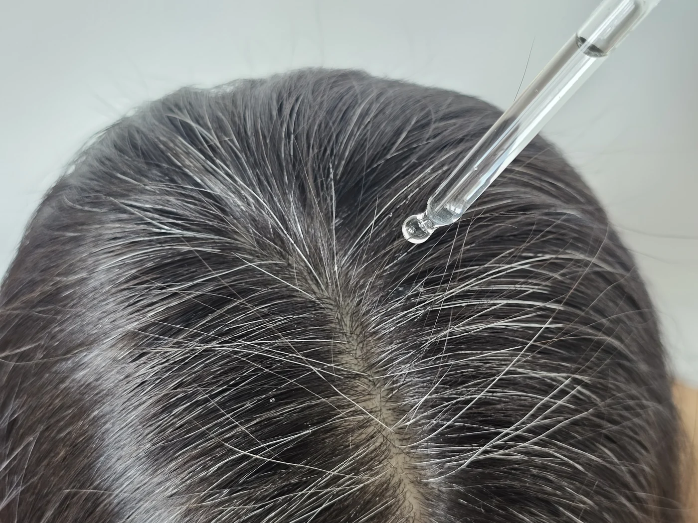
One full dropper along the scalp, daily.
Ten seconds a day. Then get on with your life and let the follicle cycle do what it needs to do.
▶ SEE MY HAIR COLLAPSE INDEX & UNLOCK MY PRICE →3 Months From Now, You'll Be Living 1 of 2 Stories
Here's the truth nobody says out loud.
This doesn't fix itself because you read one more article about it.
Path one is familiar.
Another shampoo. Another bottle of biotin. Another serum a stranger swore by. Another morning where the comb tells you exactly what it told you yesterday.
But here's the part I need you to sit with, because it's the part women don't let themselves think about.
It doesn't stay the same. It gets worse.
That's what DHT does. It doesn't pause while you decide. Every month it's on a root, that root gets weaker, thinner, and closer to the one thing that can't be undone — because a strangled root can come back, and a dead one can't.
So path one isn't your hair staying like this.
Path one is three months from now, when the part is wider than it is today and you know it, because you measure it every morning in that mirror and you remember exactly what it looked like when you read this.
It's the shower again. Eyes closed again. That thing in your hand again, and the fast little movement to the trash so nobody sees it.
It's the twenty minutes. Again tomorrow. Again the day after. Five days of your life a year, spent hiding.
It's your body going rigid the next time someone you love reaches for your head.
It's the winter you start wearing hats indoors and telling people you're cold.
It's the appointment you cancel because you can't stand hearing your hairdresser go quiet.
It's looking in the mirror at a woman ten years older than you are and slowly, quietly, starting to accept her.
And the worst version of path one is the one where you did start something, and stopped at week three — right before the ground had rebuilt, right before anything would have pushed through — and spent the rest of your life believing you were the exception. That your hair was the problem.
Path two is different.
Three months from now, it's a Saturday morning and you're standing in the bathroom in that same terrible overhead light.
And you're not measuring anything.
You wash your hair with your eyes open. You rinse, you step out, and you don't look at the drain — not because you're avoiding it, but because it stopped being something you check.
You reach for the brush and you use it the way you used it at 25. One stroke. Another. Nothing to clean.
You're out the door in ten minutes because there's nothing to arrange. No scarf. No clip. No powder. No part dragged over to the other side. Your hair is down, on purpose, in daylight, and you're not thinking about it at all.
That's the part that surprises women the most. Not the mirror. The silence.
The voice in your head that has spent three years narrating your hair — is it worse today, is that light bad, will he notice, should I sit somewhere else — just isn't talking anymore.
You go to lunch and you sit wherever you want.
Your hairdresser lifts a section, stops, and asks what you've been doing.
Someone you love puts a hand on the back of your head and you lean into it, without a single thought, for the first time in years.
And that night you'll catch a photo of yourself that somebody else took, and you'll look at it and think: there I am.
Not younger. Not fixed. You. The one you were before all this started.
That's not vanity.
That's you, coming back.
Crowned is the complete ritual I wish I'd understood before I spent so long getting it wrong with my own sister.
Now you get to decide whether you keep managing this — or finally test the one thing that goes where the damage actually is, without carrying any of the risk.
Answer the six questions below. Your result is ready in under a minute.
▶ SEE MY HAIR COLLAPSE INDEX & UNLOCK MY OFFER →With hope,
Dr. Sarah Whitfield, MD Dermatologist · Creator of Crowned
POSTSCRIPT by Dr. Sarah Whitfield
P.S. Diane sent me a photo last week. Hair down. She didn't write a caption. She didn't have to. That's the transformation I care about most.
P.P.S. A copper peptide face serum is not the ritual. It's the right ingredient in the wrong form, at the wrong dose, in a format built to sit on the surface — and without any of the three things that make the result hold. Crowned does all three jobs, in order: Free the root. Rebuild the ground. Feed the new hair. That's the part every video leaves out.
P.P.P.S. The 70% reader price is tied to the anniversary allocation. Take the thirty-second index check to see whether the full-cycle package is still open for your profile today.